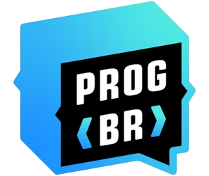
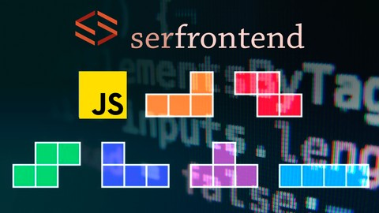

-

Curso: Análise e Desenvolvimento de sistemas
Instituição: Centro Universitário Fundação Santo andré(CUFSA) -

ProgramadorBr - Desenvolvimento web full stack (em andamento)
-
Udemy - Logica de programação
-

Udemy - Logica de programação com Javascript
-

Udemy - Javascript de A a Z
-
Udemy - Iniciando com git e github
Superior
Cursos
Meus Conhecimentos